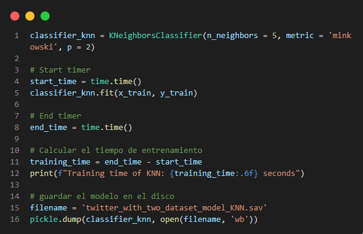

Algoritmo de k vecinos más cercanos

Es un clasificador de aprendizaje supervisado no paramétrico, que utiliza la proximidad para hacer clasificaciones o predicciones sobre la agrupación de un punto de datos individual.

Para este análisis es uno de los más importantes, ya que es el modelo de
clasificación con más exactitud en comparación con otros.